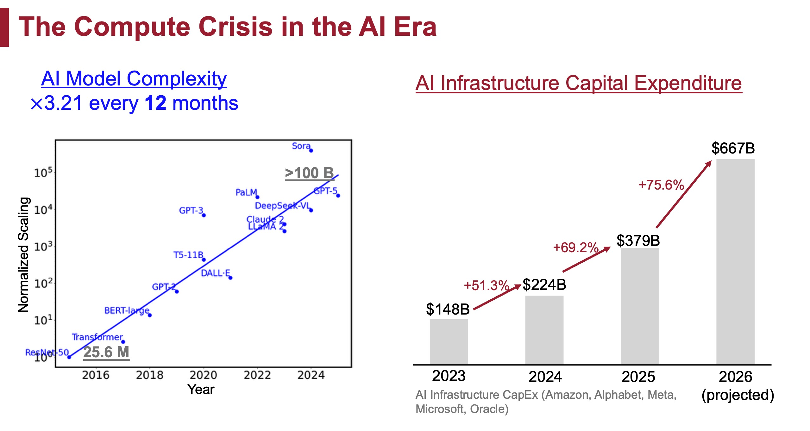
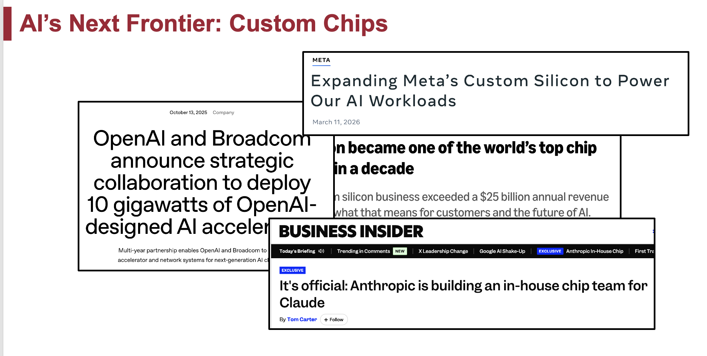
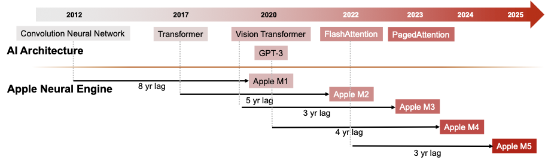
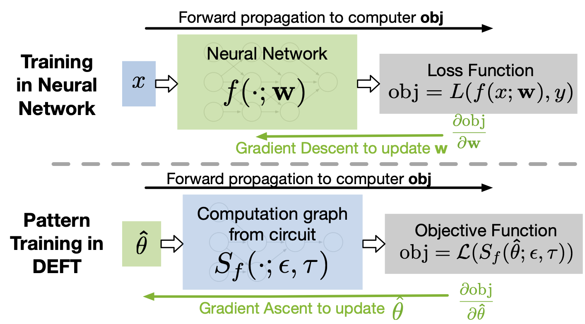
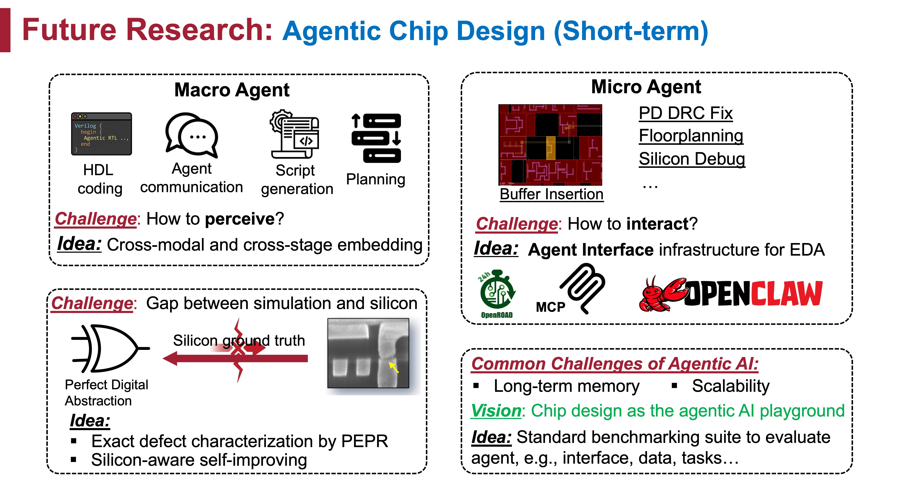
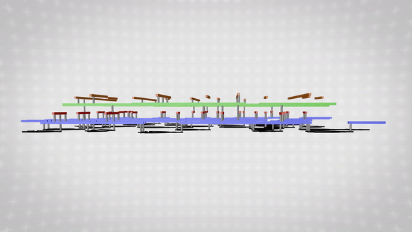

Research Vision
Why chip design needs a new paradigm in the AI era, and the four directions my group is pursuing.
We are now in the era of AI. I am very excited about it. The demand for AI hardware is increasing rapidly, but hardware development is struggling to keep up with the speed of AI architecture evolution.

The pressure is no longer coming only from traditional semiconductor companies. Hyperscalers and frontier-model companies, the “new money” of AI, are increasingly moving down the stack and building custom silicon for their own workloads. For example, Meta has developed and deployed its MTIA accelerators, while OpenAI and Broadcom have announced a collaboration to deploy OpenAI-designed AI accelerators. At the scale of modern AI, hardware specialized for the actual workload can improve performance, energy efficiency, and total cost. Chip design is therefore becoming a core strategic capability for AI companies, not just something purchased from the traditional semiconductor supply chain.

This makes faster and better chip design even more important. A custom accelerator is useful only if its design can keep pace with the models and systems it is meant to serve. If each new chip still takes years to develop, the hardware risks arriving for yesterday's AI. Faster solvers, more automated design flows, and tighter hardware-software co-design are becoming essential to making advanced AI scalable and affordable.

The basic reason is simple to say (and painful to live with): a modern chip can require years to move from an abstract specification to manufacturable silicon. The design problem is too complex to solve in one shot, so the industry divides it into many stages: architecture, RTL, verification, synthesis, floorplanning, placement, routing, timing closure, testing, diagnosis, and more. Divide-and-conquer is beautiful, but it also creates boundaries.
Engineers often discover violations late, only to realize that the fix belongs to an earlier stage. Communication across teams and stages can be measured in days or weeks. For the most ambitious chips, the timeline can be around two years and involve more than one thousand engineers when the target is optimal performance, power, and area (PPA).

My view is that we need a new paradigm for chip design. I am especially excited about four fronts:
- EDA algorithms (optimization & AI): AI, algorithms, data structures, and optimization methods that improve core EDA tasks.
- Agentic EDA: LLM-based systems that accelerate the whole design cycle from human-in-the-loop iteration to human-on-the-loop automation.
- Hardware testing: testing, diagnosis, and runtime resilience when chips fail silently in large AI systems.
- Future hardware: design automation and testing for photonics, monolithic 3D, compute-in-memory, and whatever computing paradigm wins next.
The first two directions ask how to design chips faster. The third asks how to trust the chips after they enter real AI infrastructure. The fourth asks what happens when the substrate itself changes, from 2D silicon toward new computing fabrics.
The timing is almost unreasonable: the problems are hard, the industry needs answers, and the next generation of students can still leave fingerprints on the field (yes, I mean this quite seriously). Let us try to build something that people will remember.
Research Directions
1. EDA Algorithms: Optimization & AI
Differentiable optimization, reinforcement learning, graph neural networks, ...
This direction is a good fit if you are interested in an industrial research path, and if you like optimization, AI, algorithms, data structures, or CS theory. Many EDA subproblems can be abstracted into beautiful mathematical problems. Generations of researchers have proposed elegant algorithms and data structures, from classical heuristics and analytical methods to specialized data structures such as dancing links for multiple patterning layout decomposition. This is why I fell in love with research as an undergraduate: the elegant algorithms you learned from textbooks can quietly live inside almost every electronic device you use every day (hard to imagine a more romantic job for an algorithm, right?).
A recurring challenge is the "impossible triangle" among quality, runtime, and generalizability. In recent years, new methods have become especially exciting: reinforcement learning and graph learning for AI4EDA, and differentiable programming for optimization problems that can be integrated naturally into deep learning toolkits and accelerated on AI hardware.

A nice feedback loop appears here: AI hardware accelerates AI-friendly EDA algorithms, and these algorithms can help produce better AI hardware (cool, right?). Related examples from my work include graph learning for layout decomposition, point-cloud learning for routing tree construction, and differentiable global routing.
2. Agentic EDA
How do we bring AI agents into EDA?
Advancing individual solvers is necessary, but not sufficient. Closing the gap between AI hardware demand and chip design capacity requires a paradigm shift in how the entire flow operates. Today, design flows involve repeated failure, rollback, script writing, debugging, and human coordination. LLMs create a new chance to automate script generation, RTL coding, verification assistance, design-space exploration, and flow management.
But chip design is not a normal software-agent playground. It is large-scale, multimodal, tool-heavy, and full of hard physical constraints. How can an LLM understand RTL text, graphs, layouts, timing reports, waveforms, tool logs, and design intent without getting lost? How should it plan, call tools, verify progress, and know when to ask humans for help?

I do not view LLMs only as an application to chip design. I view chip design as one of the best arenas for testing the real capability of LLM agents: the system is among the most complex artifacts humans build, and improvement can affect industry immediately. My recent BRIDGES work is one step in this direction: connecting graph-structured chip data with LLM reasoning. The rise of companies such as Ricursive Intelligence and Agentry also shows how hot this vision has become.
3. Hardware Testing
Can we trust chips after fabrication?
No product can be guaranteed flawless forever, and chips are no exception. With the explosive deployment of AI infrastructure, industry has observed a severe and unexpected failure mode: chips can pass production tests, enter datacenters, and later produce wrong results without warning. This is known as silent data corruption (SDC).
This problem has drawn major industrial attention; see, for example, Silent Data Corruption at Scale and Silent Data Corruption by 10x Test Escapes Threatens Reliable Computing. In my lab at CMU, we have been collaborating with multiple large technology companies and chip organizations on testing, diagnosis, and reliability.
Open questions include: if SDC is caused by escaped defects, why do those defects escape manufacturing test, and how can we detect more of them before shipping? If defects arise or become visible after deployment, how can AI systems become robust to them? Can we design cheap, efficient, and scalable in-field tests for new defects before they silently damage training or inference?

4. Future Hardware
Design automation for 3D ICs, memory systems, photonics, ...
From my internships, reading, and many conversations across industry and academia, one message keeps returning: traditional two-dimensional silicon scaling is no longer enough. If our ambitions include artificial general intelligence, world models, and embodied AI systems that act in the physical world, hardware may become the limiting wall.
There are many promising directions: photonics, quantum computing, compute-in-memory, 3D integration, and other post-von-Neumann computing paradigms. As someone trained in design automation and testing for silicon, I am excited by the chance to collaborate with researchers in these emerging areas and build new automation and testing frameworks for future hardware. If you happen to be interested in these fields, I am very happy to connect you with scholars working on them, for example Prof. Subhasish Mitra at Stanford for monolithic 3D and Zhengqi Gao for photonics.
My vision is always the same: no matter which future computing paradigm wins, it will need a serious framework for design automation and testing.
NUS is also a wonderful place for this direction, with strong architecture and systems faculty and a unique position between Asia and the global semiconductor ecosystem.
← Back to Join Us Interested? Email weili3@nus.edu.sg (see How to Apply).